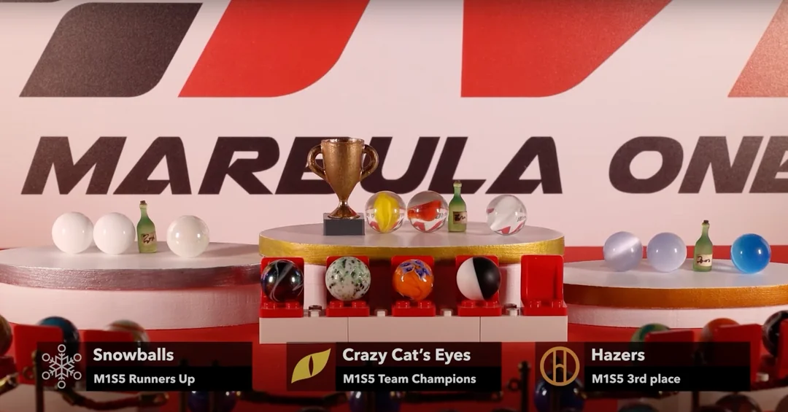
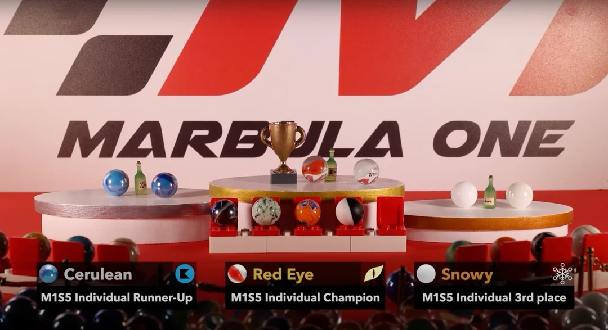
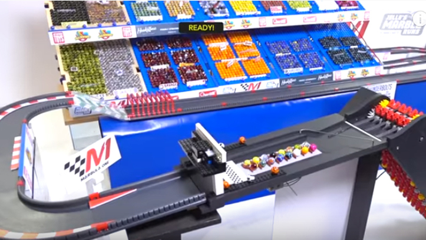

IBAI Y ANDER NARRAN CARRERAS DE CANICAS (MORBULA ONE)
Los youtubers de moda ven nuestra competición.

🏁 Marbula One S4 GP7 🏁 Misty Mountain RACE 🌫️ Jelle's Marble Runs
Disfruta del 7th GP de la Marbula One S4!
¡Enhorabuena a los entrenadores de la Temporada 5 de Marbula One!
¡Enhorabuena a los entrenadores White Eye, Red Eye y Yellow Eye de los Crazy Cat's Eyes por ser vuestros bicampeones mundiales de Marbula One!
¡Enhorabuena al campeoón de la Temporada 5 de Marbula One!
¡Y enhorabuena al mismísimo GOAT, Red Eye de los Crazy Cat's Eyes, por ser vuestro tricampeón mundial individual de Marbula One!
Las Jelle's Marble Runs, la competición de Marble de carreras de canicas
La 'Marbula One', el deporte que sustituye a la Fórmula 1 durante la cuarentena
Kosmokrats patrocina las carreras de canicas de Jelle - Marbula One 7 de noviembre.
Las carreras de canicas de Jelle han sido el antídoto perfecto para el confinamiento, emocionando a millones de personas en todo el mundo con la acción de las carreras de canicas, tan buena como cualquier deporte televisado.